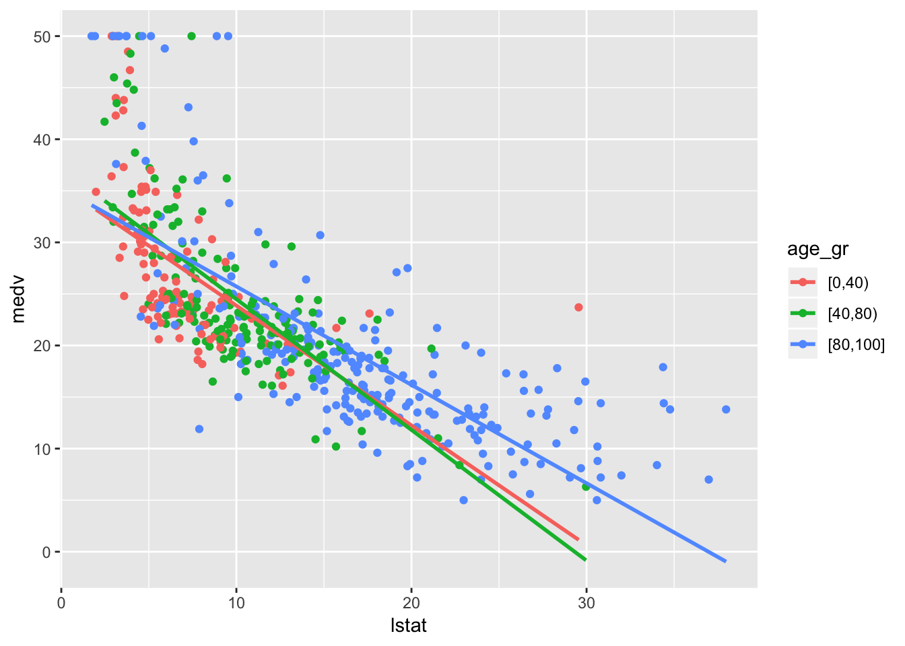

데이터 임상의학 w/ R (5)
Yoon-Ho Hong, MD, PhD
Aug 28, 2018
회귀(regression)
fit a simple linear regression model, with medv as the response and lstat as the predictor.
- medv; median house value
- lstat; percent of households with low socioeconomic status
Questions
1. Is there relationship between the median house value and the percent of households with low socioeconomic status?
- fit a linear model
- test the hypothesis: \(\beta_x\) = 0
library(MASS)##
## Attaching package: 'MASS'## The following object is masked from 'package:dplyr':
##
## selectattach(Boston)
lm.fit = lm(medv ~ lstat)
lm.fit##
## Call:
## lm(formula = medv ~ lstat)
##
## Coefficients:
## (Intercept) lstat
## 34.55 -0.95summary(lm.fit)##
## Call:
## lm(formula = medv ~ lstat)
##
## Residuals:
## Min 1Q Median 3Q Max
## -15.168 -3.990 -1.318 2.034 24.500
##
## Coefficients:
## Estimate Std. Error t value Pr(>|t|)
## (Intercept) 34.55384 0.56263 61.41 <2e-16 ***
## lstat -0.95005 0.03873 -24.53 <2e-16 ***
## ---
## Signif. codes: 0 '***' 0.001 '**' 0.01 '*' 0.05 '.' 0.1 ' ' 1
##
## Residual standard error: 6.216 on 504 degrees of freedom
## Multiple R-squared: 0.5441, Adjusted R-squared: 0.5432
## F-statistic: 601.6 on 1 and 504 DF, p-value: < 2.2e-16Note
1. How to calculate the estimates of parameters?
2. How large is the effect of percent of households with low socioeconomic status on median house value?
names(lm.fit)## [1] "coefficients" "residuals" "effects" "rank"
## [5] "fitted.values" "assign" "qr" "df.residual"
## [9] "xlevels" "call" "terms" "model"coef(lm.fit)## (Intercept) lstat
## 34.5538409 -0.9500494confint(lm.fit)## 2.5 % 97.5 %
## (Intercept) 33.448457 35.6592247
## lstat -1.026148 -0.87395052. How accurate is the linear model?
- R-squared (percentage of variability in the response that is explained by the predictors)
\[R^2 = \frac{TSS - RSS}{TSS}\]
- TSS: Total sum of squares
- RSS: Residual sum of squares
- Root mean squared error.
rmse = function(x){
sqrt(sum(residuals(x)^2)/df.residual(lm.fit))
}Note How different is the multiple R-squared from the Adjusted R-squared?
The adjusted R-squared is a modified version of R-squared that has been adjusted for the number of predictors in the model. The adjusted R-squared increases only if the new term improves the model more than would be expected by chance. It decreases when a predictor improves the model by less than expected by chance. It is always lower than the R-squared.
3. Can we predict future house values? How accurately?
predict(lm.fit, data.frame(lstat=(c(5,10,15))))## 1 2 3
## 29.80359 25.05335 20.30310predict(lm.fit, data.frame(lstat=(c(5,10,15))), interval ="confidence")## fit lwr upr
## 1 29.80359 29.00741 30.59978
## 2 25.05335 24.47413 25.63256
## 3 20.30310 19.73159 20.87461predict(lm.fit, data.frame(lstat=(c(5,10,15))), interval ="prediction")## fit lwr upr
## 1 29.80359 17.565675 42.04151
## 2 25.05335 12.827626 37.27907
## 3 20.30310 8.077742 32.52846Note what’s difference between confidence interval vs. prediction interval?
the confidence interval tells you about the likely location of the true population parameter. the prediction interval tells you about the distribution of values, not the uncertainty in determining the population mean. Prediction intervals will always be wider than confidence intervals because they account for the uncertainty associated with ε, the irreducible error.
Potential problems in linear regression
1. Non-linearity of the data
Is the relationship linear?
plot(lstat, medv)
abline(lm.fit)# diagnostic plots
par(mfrow=c(2,2))
plot(lm.fit)# linearity
# residual plots
plot(predict(lm.fit), residuals(lm.fit))plot(predict(lm.fit), rstudent(lm.fit))
abline(h=c(-3,3))Note
Residual plots are a useful graphical tool for identifying non-linearity. The standardized (or studentized) residuals, computed by dividing each residual by its estimated standard error. If the residual plot indicates that there are non-linear associations in the data, then a simple approach is to use non-linear transformations of the predictors, such as logX, √X, and X^2, in the regression model.
How can we improve the model?
- Polynomial
- Multiple
polynomial linear regression
lm.fit2 = lm(medv ~ lstat + I(lstat^2))
summary(lm.fit2)##
## Call:
## lm(formula = medv ~ lstat + I(lstat^2))
##
## Residuals:
## Min 1Q Median 3Q Max
## -15.2834 -3.8313 -0.5295 2.3095 25.4148
##
## Coefficients:
## Estimate Std. Error t value Pr(>|t|)
## (Intercept) 42.862007 0.872084 49.15 <2e-16 ***
## lstat -2.332821 0.123803 -18.84 <2e-16 ***
## I(lstat^2) 0.043547 0.003745 11.63 <2e-16 ***
## ---
## Signif. codes: 0 '***' 0.001 '**' 0.01 '*' 0.05 '.' 0.1 ' ' 1
##
## Residual standard error: 5.524 on 503 degrees of freedom
## Multiple R-squared: 0.6407, Adjusted R-squared: 0.6393
## F-statistic: 448.5 on 2 and 503 DF, p-value: < 2.2e-16anova(lm.fit, lm.fit2)## Analysis of Variance Table
##
## Model 1: medv ~ lstat
## Model 2: medv ~ lstat + I(lstat^2)
## Res.Df RSS Df Sum of Sq F Pr(>F)
## 1 504 19472
## 2 503 15347 1 4125.1 135.2 < 2.2e-16 ***
## ---
## Signif. codes: 0 '***' 0.001 '**' 0.01 '*' 0.05 '.' 0.1 ' ' 1# plot
library(ggplot2)
ggplot(Boston, aes(lstat, medv)) + geom_point() +
stat_smooth(method = "lm", col="blue") +
stat_smooth(method="lm", formula = y ~ poly(x, 2), col="red")multipe linear regression
lm.fit3 = lm(medv ~ lstat + age, data = Boston)
summary(lm.fit3)##
## Call:
## lm(formula = medv ~ lstat + age, data = Boston)
##
## Residuals:
## Min 1Q Median 3Q Max
## -15.981 -3.978 -1.283 1.968 23.158
##
## Coefficients:
## Estimate Std. Error t value Pr(>|t|)
## (Intercept) 33.22276 0.73085 45.458 < 2e-16 ***
## lstat -1.03207 0.04819 -21.416 < 2e-16 ***
## age 0.03454 0.01223 2.826 0.00491 **
## ---
## Signif. codes: 0 '***' 0.001 '**' 0.01 '*' 0.05 '.' 0.1 ' ' 1
##
## Residual standard error: 6.173 on 503 degrees of freedom
## Multiple R-squared: 0.5513, Adjusted R-squared: 0.5495
## F-statistic: 309 on 2 and 503 DF, p-value: < 2.2e-16lm.fit4 = lm(medv ~ ., data = Boston)
summary(lm.fit4)##
## Call:
## lm(formula = medv ~ ., data = Boston)
##
## Residuals:
## Min 1Q Median 3Q Max
## -15.595 -2.730 -0.518 1.777 26.199
##
## Coefficients:
## Estimate Std. Error t value Pr(>|t|)
## (Intercept) 3.646e+01 5.103e+00 7.144 3.28e-12 ***
## crim -1.080e-01 3.286e-02 -3.287 0.001087 **
## zn 4.642e-02 1.373e-02 3.382 0.000778 ***
## indus 2.056e-02 6.150e-02 0.334 0.738288
## chas 2.687e+00 8.616e-01 3.118 0.001925 **
## nox -1.777e+01 3.820e+00 -4.651 4.25e-06 ***
## rm 3.810e+00 4.179e-01 9.116 < 2e-16 ***
## age 6.922e-04 1.321e-02 0.052 0.958229
## dis -1.476e+00 1.995e-01 -7.398 6.01e-13 ***
## rad 3.060e-01 6.635e-02 4.613 5.07e-06 ***
## tax -1.233e-02 3.760e-03 -3.280 0.001112 **
## ptratio -9.527e-01 1.308e-01 -7.283 1.31e-12 ***
## black 9.312e-03 2.686e-03 3.467 0.000573 ***
## lstat -5.248e-01 5.072e-02 -10.347 < 2e-16 ***
## ---
## Signif. codes: 0 '***' 0.001 '**' 0.01 '*' 0.05 '.' 0.1 ' ' 1
##
## Residual standard error: 4.745 on 492 degrees of freedom
## Multiple R-squared: 0.7406, Adjusted R-squared: 0.7338
## F-statistic: 108.1 on 13 and 492 DF, p-value: < 2.2e-162. Correlation of error terms
If in fact there is correlation among the error terms, then the estimated standard errors will tend to underestimate the true standard errors. Such correlations frequently occur in the context of time series data, which consists of observations for which measurements are obtained at discrete points in time. In many cases, observations that are obtained at adjacent time points will have positively correlated errors. Many methods have been developed to properly take account of correlations in the error terms in time series data.
3. Non-constant variance of error terms
One can identify non-constant variances in the errors, or heteroscedasticity, from the presence of a funnel shape in the residual plot. When faced with this problem, one possible solution is to trans- form the response Y using a concave function such as log Y or \(\sqrt{Y}\) . Such a transformation results in a greater amount of shrinkage of the larger responses, leading to a reduction in heteroscedasticity.
4. Outliers
If we believe that an outlier has occurred due to an error in data collection or recording, then one solution is to simply remove the observation. However, care should be taken, since an outlier may instead indicate a deficiency with the model, such as a missing predictor.
5. High leverage points
Observations with high leverage have an unusual value for \(x_i\)
6. Collinearity
Collinearity refers to the situation in which two or more predictor variables are closely related to one another. The presence of collinearity can pose problems in the regression context, since it can be difficult to separate out the individual effects of collinear variables on the response. Since collinearity reduces the accuracy of the estimates of the regression coefficients, it causes the standard error for \(\hat{β}_j\) to grow.
Note
A simple way to detect collinearity is to look at the correlation matrix of the predictors. Instead of inspecting the correlation matrix, a better way to assess multi-collinearity is to compute the variance inflation factor (VIF).
\[VIF = \frac{var(\hat{β}_j)_f}{var(\hat{β}_j)_u}\]$ - f: full model
- u; univariate model
As a rule of thumb, a VIF value that exceeds 5 or 10 indicates a problematic amount of collinearity.
library(car)## Warning: package 'car' was built under R version 3.4.4## Loading required package: carData## Warning: package 'carData' was built under R version 3.4.4##
## Attaching package: 'car'## The following object is masked from 'package:dplyr':
##
## recodevif(lm.fit4) # variance inflation factor## crim zn indus chas nox rm age dis
## 1.792192 2.298758 3.991596 1.073995 4.393720 1.933744 3.100826 3.955945
## rad tax ptratio black lstat
## 7.484496 9.008554 1.799084 1.348521 2.941491# vif, cut-off for collinea rity
# what would be the solution for collinearity problem?
lm.fit = update(lm.fit, ~. -age)
summary(lm.fit)##
## Call:
## lm(formula = medv ~ lstat)
##
## Residuals:
## Min 1Q Median 3Q Max
## -15.168 -3.990 -1.318 2.034 24.500
##
## Coefficients:
## Estimate Std. Error t value Pr(>|t|)
## (Intercept) 34.55384 0.56263 61.41 <2e-16 ***
## lstat -0.95005 0.03873 -24.53 <2e-16 ***
## ---
## Signif. codes: 0 '***' 0.001 '**' 0.01 '*' 0.05 '.' 0.1 ' ' 1
##
## Residual standard error: 6.216 on 504 degrees of freedom
## Multiple R-squared: 0.5441, Adjusted R-squared: 0.5432
## F-statistic: 601.6 on 1 and 504 DF, p-value: < 2.2e-16Other considerations
1. interaction terms
lm.fit = lm(medv ~ lstat*age, data = Boston)
ggplot(Boston, aes(lstat, medv, col = age)) + geom_point()Boston$age_gr = cut(Boston$age, breaks = c(0,40,80,100), include.lowest = T, right = F)
levels(Boston$age_gr)## [1] "[0,40)" "[40,80)" "[80,100]"ggplot(Boston, aes(lstat, medv, col = age_gr)) + geom_point() + stat_smooth(method = "lm", se = F)
2. Qualitative predictors
Boston$chas = factor(Boston$chas)
lm.fit5 = lm(medv~., data = Boston)
summary(lm.fit5)##
## Call:
## lm(formula = medv ~ ., data = Boston)
##
## Residuals:
## Min 1Q Median 3Q Max
## -15.6791 -2.8271 -0.5774 1.8556 25.7952
##
## Coefficients:
## Estimate Std. Error t value Pr(>|t|)
## (Intercept) 37.955262 5.223334 7.266 1.46e-12 ***
## crim -0.111893 0.032908 -3.400 0.000728 ***
## zn 0.039370 0.014283 2.756 0.006062 **
## indus 0.008729 0.061776 0.141 0.887695
## chas1 2.683814 0.861072 3.117 0.001935 **
## nox -18.906650 3.874477 -4.880 1.44e-06 ***
## rm 3.781777 0.418028 9.047 < 2e-16 ***
## age 0.006595 0.025379 0.260 0.795089
## dis -1.475989 0.199567 -7.396 6.13e-13 ***
## rad 0.320796 0.066710 4.809 2.02e-06 ***
## tax -0.012863 0.003766 -3.416 0.000689 ***
## ptratio -0.958403 0.130767 -7.329 9.63e-13 ***
## black 0.009295 0.002682 3.466 0.000575 ***
## lstat -0.532198 0.050794 -10.477 < 2e-16 ***
## age_gr[40,80) -1.193963 1.077300 -1.108 0.268279
## age_gr[80,100] -0.446585 1.725922 -0.259 0.795936
## ---
## Signif. codes: 0 '***' 0.001 '**' 0.01 '*' 0.05 '.' 0.1 ' ' 1
##
## Residual standard error: 4.738 on 490 degrees of freedom
## Multiple R-squared: 0.7425, Adjusted R-squared: 0.7346
## F-statistic: 94.19 on 15 and 490 DF, p-value: < 2.2e-16contrasts(Boston$chas) # dummy variables ## 1
## 0 0
## 1 1분류(classification)
classifier: assign a probability to each class
Examples of classification problem… 을 생각해보자…
logistic regression
Logit function
\[P(X) = \frac{e^{\beta_0+\beta_1X}}{1+e^{\beta_0+\beta_1X}}\]
Odds
\[\frac{P(X)}{1-P(X)} = e^{\beta_0+\beta_1X}\] odds: P(event)/P(nonevent)
Logit \[log(\frac{P(X)}{1-P(X)}) = \beta_0 + \beta_1X\]
titanic survival classification
library(carData)
head(TitanicSurvival)## survived sex age passengerClass
## Allen, Miss. Elisabeth Walton yes female 29.0000 1st
## Allison, Master. Hudson Trevor yes male 0.9167 1st
## Allison, Miss. Helen Loraine no female 2.0000 1st
## Allison, Mr. Hudson Joshua Crei no male 30.0000 1st
## Allison, Mrs. Hudson J C (Bessi no female 25.0000 1st
## Anderson, Mr. Harry yes male 48.0000 1ststr(TitanicSurvival)## 'data.frame': 1309 obs. of 4 variables:
## $ survived : Factor w/ 2 levels "no","yes": 2 2 1 1 1 2 2 1 2 1 ...
## $ sex : Factor w/ 2 levels "female","male": 1 2 1 2 1 2 1 2 1 2 ...
## $ age : num 29 0.917 2 30 25 ...
## $ passengerClass: Factor w/ 3 levels "1st","2nd","3rd": 1 1 1 1 1 1 1 1 1 1 ...summary(TitanicSurvival)## survived sex age passengerClass
## no :809 female:466 Min. : 0.1667 1st:323
## yes:500 male :843 1st Qu.:21.0000 2nd:277
## Median :28.0000 3rd:709
## Mean :29.8811
## 3rd Qu.:39.0000
## Max. :80.0000
## NA's :263TitanicSurvival = TitanicSurvival[complete.cases(TitanicSurvival),]fit logistic regression model
glm.fit = glm(survived ~., data = TitanicSurvival, family = "binomial")summary(glm.fit)##
## Call:
## glm(formula = survived ~ ., family = "binomial", data = TitanicSurvival)
##
## Deviance Residuals:
## Min 1Q Median 3Q Max
## -2.6399 -0.6979 -0.4336 0.6688 2.3964
##
## Coefficients:
## Estimate Std. Error z value Pr(>|z|)
## (Intercept) 3.522074 0.326702 10.781 < 2e-16 ***
## sexmale -2.497845 0.166037 -15.044 < 2e-16 ***
## age -0.034393 0.006331 -5.433 5.56e-08 ***
## passengerClass2nd -1.280570 0.225538 -5.678 1.36e-08 ***
## passengerClass3rd -2.289661 0.225802 -10.140 < 2e-16 ***
## ---
## Signif. codes: 0 '***' 0.001 '**' 0.01 '*' 0.05 '.' 0.1 ' ' 1
##
## (Dispersion parameter for binomial family taken to be 1)
##
## Null deviance: 1414.62 on 1045 degrees of freedom
## Residual deviance: 982.45 on 1041 degrees of freedom
## AIC: 992.45
##
## Number of Fisher Scoring iterations: 4coef(glm.fit)## (Intercept) sexmale age passengerClass2nd
## 3.52207401 -2.49784467 -0.03439323 -1.28056974
## passengerClass3rd
## -2.28966056odds
exp(coef(glm.fit)[2])## sexmale
## 0.08226211male 인 경우 female 에 비해서, 생존/죽음 odds가 0.08배 (즉, 훨씬 낮다, 10배 이상), Odds ratio 개념…
dummy variables
contrasts(TitanicSurvival$survived)## yes
## no 0
## yes 1contrasts(TitanicSurvival$passengerClass)## 2nd 3rd
## 1st 0 0
## 2nd 1 0
## 3rd 0 1prediction
glm.probs = predict(glm.fit, type = "response")confusion matrix
accuracy
glm.pred = rep("no", 1046)
glm.pred[glm.probs>0.5] = "yes"
table(glm.pred, TitanicSurvival$survived)##
## glm.pred no yes
## no 520 126
## yes 99 301mean(glm.pred == TitanicSurvival$survived)## [1] 0.7848948test error rate
set.seed(1)
index = sample(1:1046, round(1046/7), replace = F)
train.glm = TitanicSurvival[index,]
test.glm = TitanicSurvival[-index,]fit the model wit training data, and predict in test data
glm.fit = glm(survived ~., data = train.glm,
family = "binomial")
glm.probs = predict(glm.fit, test.glm, type = "response")confusion matrix
accuray
glm.pred = rep("no", 1046-round(1046/7))
glm.pred[glm.probs>0.5] = "yes"
table(glm.pred, test.glm$survived)##
## glm.pred no yes
## no 447 115
## yes 84 251mean(glm.pred == test.glm$survived)## [1] 0.7781494linear discrminant analysis
Bayes theorem
\[P(B|A) = \frac{P(A|B)\times P(B)}{P(A)}\] Bayes classifier \[P(Y=k|X=x) = \frac{P(X=x|Y=k) \times P(Y=k)}{\sum_{l=1}^k P(X=x|Y=l)} \]
assume in LDA
- normal distribution of P(X|Y=k)
- common variance across different k class
calculate posterior probability with…
- P(Y=k): proportion
- \(\mu_k: mean(X)\ in\ class\ k\)
- \(\sigma^2: variance\)
다음 식이 최대가 되는 클래스에 관측치 X=x 를 할당한다.
\[\hat{\delta_k} = x\times\frac{\hat{\mu_k}}{\hat{\sigma}^2}-\frac{\hat{\mu_k}^2}{2\hat{\sigma}^2}+log(\hat{\pi_k})\]
figure 
library(MASS)
lda.fit = lda(survived~., data = train.glm)
lda.fit## Call:
## lda(survived ~ ., data = train.glm)
##
## Prior probabilities of groups:
## no yes
## 0.590604 0.409396
##
## Group means:
## sexmale age passengerClass2nd passengerClass3rd
## no 0.8636364 29.67992 0.2954545 0.5909091
## yes 0.2459016 31.13934 0.2622951 0.2950820
##
## Coefficients of linear discriminants:
## LD1
## sexmale -2.248264867
## age -0.008963284
## passengerClass2nd -0.910193062
## passengerClass3rd -1.186282087plot(lda.fit)lda.pred = predict(lda.fit, test.glm)
names(lda.pred)## [1] "class" "posterior" "x"table(lda.pred$class, test.glm$survived)##
## no yes
## no 447 120
## yes 84 246mean(lda.pred$class == test.glm$survived)## [1] 0.7725753k-nearest neighbor
library(class) # knndummy variables
library(dummies)## dummies-1.5.6 provided by Decision PatternsTitanicSurvival = cbind(TitanicSurvival, dummy(TitanicSurvival$sex), dummy(TitanicSurvival$passengerClass))
TitanicSurvival.dummy = TitanicSurvival[,c(1,3,5:9)]train.knn = TitanicSurvival.dummy[index,]
test.knn = TitanicSurvival.dummy[-index,]train.x = train.knn[,-1]
train.y = train.knn[,1]
test.x = test.knn[,-1]
test.y = test.knn[,1]knn.pred = knn(train = train.x, test = test.x, cl = train.y, k=3)table(knn.pred, test.y)## test.y
## knn.pred no yes
## no 398 173
## yes 133 193mean(knn.pred == test.y)## [1] 0.6588629ROC curve
figure 
probs.glm = predict(glm.fit, test.glm, type = "response")Load the ROCR library
library(ROCR)## Loading required package: gplots##
## Attaching package: 'gplots'## The following object is masked from 'package:stats':
##
## lowessMake a prediction object: pred
pred = prediction(probs.glm, test.glm$survived)Make a performance object: perf
perf1 = performance(pred, "tpr", "fpr")Plot ROC curve
plot(perf1)
Print out the AUC
perf2 = performance(pred, "auc")
perf2@y.values[[1]]## [1] 0.8349027